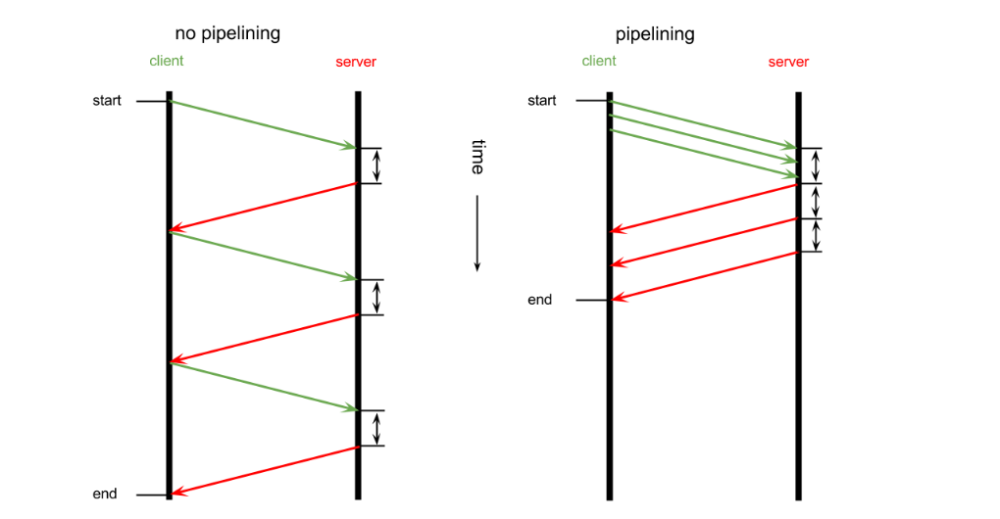

Tips and Tricks Writing Database Clients With Asyncio
Nikolay Novik
I am ...
- Software Engineer: at DataRobot Ukraine
- Github: https://github.com/jettify
- Twitter: https://twitter.com/isinf
- My Projects:
- database clients:
aiomysql, aioobc, aiogibson - web and etc:
aiohttp_debugtoolbar, aiobotocore, aiohttp_mako, aiohttp_sse, aiogearman, aiomysql_replicatoin
- database clients:
Poll
You and asyncio:
- I am using asyncio extensively
- I am using Twisted, Tornado, gevent etc. extensively
- I think async programming is kinda cool
Agenda
- Brief history of Asyncio
- Tips you need to know before writing any asyncio code
- Different approaches in database client
- Different approaches in database client
Asyncio
- The asyncio project was officially launched with the release of Python 3.4 in March 2014.
- Bare: almost no library
- One year later, asyncio has a strong community writing libraries on top of it.
asyncio Internet impact?
Search asyncio compatible library on:- google ~ 177k results
- pypi ~200 packages
- github ~350 repos
- stackoverflow ~840 related questions
- asyncio wiki page: ThirdParty
- aio-libs: github.com/aio-libs
Debugging blocking calls tip
Set environment variablePYTHONASYNCIODEBUG=1
import asyncio
import time
loop = asyncio.get_event_loop()
loop.slow_callback_duration = 0.01
async def sleeper():
time.sleep(0.1) # we block here
loop.run_until_complete(sleeper())
Executing <Task finished coro=<sleeper() done, defined at
code/debug_example.py:9> result=None created at
/usr/local/lib/python3.5/asyncio/base_events.py:323>
took 0.102 seconds
Before we start writing any asyncio code lets talk about explicit event loop
import asyncio
async def go(loop):
future = asyncio.Future(loop=loop)
future.set_result(None)
await asyncio.sleep(3.0, loop=loop)
await future
print("foo")
loop = asyncio.get_event_loop()
loop.run_until_complete(go(loop))
loop.close()
Explicit Loop
- Global variables are bad (TM).
- Explicit loop makes code testable.
- Passing loop explicitly in library is sign of good code quality.
asyncioitself,aiohttpand anyaio-libslibraries do this
Glyph on global event loop
It would really be a pity if Tulip repeated our billion-dollar mistake [global reactor] ;-)
Testing asyncio code with pytest
Use fixtures, Luke!
@pytest.fixture
def loop(request):
loop = asyncio.new_event_loop()
asyncio.set_event_loop(None)
def fin():
loop.close()
request.addfinalizer(fin)
return loop
def test(loop):
async def go():
await asyncio.sleep(loop=loop)
assert 1 == 2
loop.run_until_complete()
- Make sure, that you use fresh new
loopfor each test. - Loop should be passed explicitly.
Approach #1 So here super secret algorithm to write db client
- Search db client on github.com/aio-libs
- Make commit ++5 --1000
- ????
- Profit!
Save development time, but you have no idea what is going on in db client. Your PM will be happy.
Third party libary pro tip!
Read the (f*g) source code of your libraries! Example of python code from OneDrive SDK
@asyncio.coroutine
def get_async(self):
"""Sends the GET request using an asyncio coroutine
....
"""
future = self._client._loop.run_in_executor(None,
self.get)
collection_response = yield from future
return collection_response
Approach #2 Database supports rest api
- DynamoDB
- Neo4j
- Elasticsearch
- HBase
- HDFS
- CouchDB
- Riak
- VoltDB
- InfluxDB
- ArangoDB
REST Client Tip
aiohttp.ClientSession is your friend
import asyncio
import aiohttp
async def go(loop):
session = aiohttp.ClientSession(loop=loop)
async with session.get('http://python.org') as resp:
data = await resp.text()
print(data)
session.close()
loop = asyncio.get_event_loop()
loop.run_until_complete(go(loop))
Approach #3 Is there simple text or binary protocol?
Example of databases and message queues with binary protocol:
- redis
- memcached
- couchebase
- grearman
- beanstalkd
- disque
Do not afraid to get your hands dirty.
Simple TCP using low level API
class EchoClientProtocol(asyncio.Protocol):
def __init__(self, message, loop):
self.loop, self.message = loop, message
def connection_made(self, transport):
transport.write(self.message.encode())
def data_received(self, data):
print('Data received: {!r}'.format(data.decode()))
def connection_lost(self, exc):
print('The server closed the connection')
loop = asyncio.get_event_loop()
factory = lambda: EchoClientProtocol(message, loop)
coro = loop.create_connection(factory,'127.0.0.1', 8888)
Simple TCP connection using Streams
import asyncio
async def tcp_client(message, loop):
reader, writer = await asyncio.open_connection('127.0.0.1', 8888,
loop=loop)
writer.write(message.encode())
data = await reader.read(100)
print('Received: %r' % data.decode())
writer.close()
message = 'Hello World!'
loop = asyncio.get_event_loop()
loop.run_until_complete(tcp_client(message, loop))
loop.close()
import asyncio, struct
from aiogibson import encode_command
async def read_from_connection(host, port, *, loop=None):
reader, writer = await asyncio.open_connection(
host, port, loop=loop)
cmd = encode_command(b'GET', 'key')
writer.write(cmd)
header = await reader.readexactly(4 + 2 + 1)
unpacked = struct.unpack(b'<HBI', header)
code, gb_encoding, resp_size = unpacked
payload = await reader.readexactly(resp_size)
print(payload)
Protocol Pipelining
Most binary protocols support pipelining  More info: http://tailhook.github.io/request-pipelining-presentation/ presentation/index.html
def execute(self):
cmd = encode_command(b'GET', 'key')
self.writer.write(cmd)
fut = asyncio.Future(loop=self._loop)
self._queue.append(fut)
return fut
async def reader_task(self):
while True:
header = await self.reader.readexactly(4 + 2 + 1)
unpacked = struct.unpack(b'<HBI', header)
code, gb_encoding, resp_size = unpacked
# wait and read payload
payload = await reader.readexactly(resp_size)
future = self._queue.pop()
future.set_result(payload)
aioredis for reference implementation.
Approach #4 Is Sync Python Client available?
In good sync database clients IO decoupled from protocol parsers why not just rewrite IO part?- Locate socket.recv()
- Replace with await reader.read()
- Make function coroutine with async def
- Call this function with await
- Call parent functions with await
Approach #5 Is there universal solution to all problems?
Yes. Make every blocking call in separate thread
import asyncio
from pyodbc import connect
loop = asyncio.get_event_loop()
executor = ThreadPoolExecutor(max_workers=4)
async def test_example():
dsn = 'Driver=SQLite;Database=sqlite.db'
conn = await loop.run_in_executor(executor, connect, dsn)
cursor = await loop.run_in_executor(executor, conn.cursor)
conn = await loop.run_in_executor(executor, cursor.execute,
'SELECT 42;')
loop.run_until_complete(test_example())
aioodbc example
Nice public API
pool = await aioodbc.create_pool(dsn=dsn, loop=loop)
async with pool.acquire() as conn:
cur = await conn.cursor()
await cur.execute("SELECT 42;")
r = await cur.fetchall()
print(r)
def _execute(self, func, *args, **kwargs):
func = partial(func, *args, **kwargs)
future = self._loop.run_in_executor(self._executor, func)
return future
async def _connect(self):
f = self._execute(pyodbc.connect, self._dsn,
autocommit=self._autocommit, ansi=self._ansi,
timeout=self._timeout,
**self._kwargs)
self._conn = await f
But how I know which method to call in thread?
For python code
requests.get()
with nogil:
[code to be executed with the GIL released]
For C extension
Py_BEGIN_ALLOW_THREADS
ret = SQLDriverConnect(hdbc, 0, szConnect, SQL_NTS,
0, 0, 0, SQL_DRIVER_NOPROMPT);
Py_END_ALLOW_THREADS
Keep an eye on StopIteration in python 3.4
>>> i = iter(range(2))
>>> next(i)
0
>>> next(i)
1
>>> next(i)
Traceback (most recent call last):
File "stdin", line 1, in module
StopIteration
>>>
Recap
- asyncio is fun
- Implementing binary protocols is easy
- Check out https://github.com/aio-libs